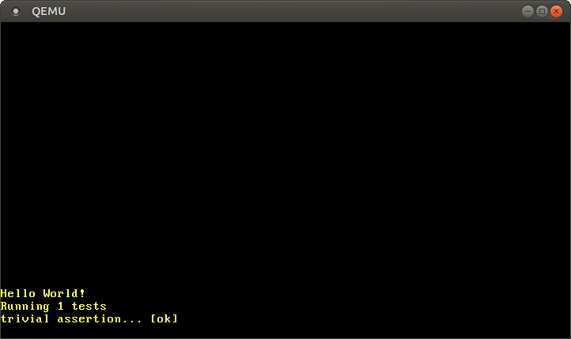

커널을 위한 테스트 작성 및 실행하기
번역된 내용 : 이것은 커뮤니티 멤버가 Testing 포스트를 번역한 글입니다. 부족한 설명이나 오류, 혹은 시간이 지나 더 이상 유효하지 않은 정보를 발견하시면 제보해주세요!
번역한 사람 : @JOE1994. With contributions from @SNOOPYOF 와 @dalinaum.
이 글에서는 no_std 실행파일에 대한 유닛 테스트 및 통합 테스트 과정을 다룰 것입니다. Rust에서 지원하는 커스텀 테스트 프레임워크 기능을 이용해 우리가 작성한 커널 안에서 테스트 함수들을 실행할 것입니다. 그 후 테스트 결과를 QEMU 밖으로 가져오기 위해 QEMU 및 bootimage 도구가 제공하는 여러 기능들을 사용할 것입니다.
이 블로그는 GitHub 저장소에서 오픈 소스로 개발되고 있으니, 문제나 문의사항이 있다면 저장소의 ‘Issue’ 기능을 이용해 제보해주세요. 페이지 맨 아래에 댓글을 남기실 수도 있습니다. 이 글과 관련된 모든 소스 코드는 저장소의 post-04 브랜치에서 확인하실 수 있습니다.
목차
🔗전제 조건
이 글은 이전에 작성된 글들 Unit Testing과 Integration Tests를 대체합니다 (예전에 작성된 이 두 포스트의 내용은 오래전 내용이라 현재는 더 이상 유효하지 않습니다). 이 글은 독자가 2019년 4월 27일 이후에 글 A Minimal Rust Kernel을 읽고 따라 실습해봤다는 가정하에 작성했습니다. 독자는 해당 포스트에서 작성했던 파일 .cargo/config.toml을 가지고 있어야 합니다. 이 파일은 컴파일 대상 환경을 설정하고 프로그램 실행 시작을 담당하는 실행 파일을 정의합니다.
🔗Rust 프로그램 테스트하기
Rust 언어에 내장된 자체 테스트 프레임워크를 사용하면 복잡한 초기 설정 과정 없이 유닛 테스트들을 실행할 수 있습니다. 작성한 함수에 가정 설정문 (assertion check)들을 삽입한 후, 함수 선언 바로 앞에 #[test] 속성을 추가하기만 하면 됩니다. 그 후에 cargo test 명령어를 실행하면 cargo가 자동으로 크레이트의 모든 테스트 함수들을 발견하고 실행합니다.
안타깝게도 우리의 커널처럼 no_std 환경에서 구동할 프로그램은 Rust가 기본으로 제공하는 테스트 프레임워크를 이용하기 어렵습니다. Rust의 테스트 프레임워크는 기본적으로 언어에 내장된 test 라이브러리를 사용하는데, 이 라이브러리는 Rust 표준 라이브러리를 이용합니다. 우리의 #no_std 커널을 테스트할 때는 Rust의 기본 테스트 프레임워크를 사용할 수 없습니다.
프로젝트 디렉터리 안에서 cargo test 명령어를 실행하면 아래와 같은 오류가 발생합니다:
> cargo test
Compiling blog_os v0.1.0 (/…/blog_os)
error[E0463]: can't find crate for `test`
test 크레이트가 표준 라이브러리에 의존하기에, 베어메탈 환경에서는 이 크레이트를 이용할 수 없습니다. test 크레이트를 #[no_std] 환경에서 이용할 수 있게 포팅(porting)하는 것이 불가능한 것은 아니지만, 일단 test 크레이트의 구현 변경이 잦아서 불안정하며 포팅 시 panic 매크로를 재정의하는 등 잡다하게 신경 써야 할 것들이 존재합니다.
🔗커스텀 테스트 프레임워크
다행히 Rust의 custom_test_frameworks 기능을 이용하면 Rust의 기본 테스트 프레임워크 대신 다른 것을 사용할 수 있습니다. 이 기능은 외부 라이브러리가 필요하지 않기에 #[no_std] 환경에서도 사용할 수 있습니다.
이 기능은 #[test case] 속성이 적용된 함수들을 모두 리스트에 모은 후에 사용자가 작성한 테스트 실행 함수에 전달하는 방식으로 작동합니다. 따라서 사용자가 작성한 테스트 실행 함수 단에서 테스트 실행 과정을 전적으로 제어할 수 있습니다.
기본 테스트 프레임워크와 비교했을 때의 단점은 should_panic 테스트와 같은 고급 기능이 준비되어 있지 않다는 것입니다. 베어메탈 환경에서는 Rust의 기본 테스트 프레임워크가 제공하는 고급 기능들이 지원되지 않기에, 이 중 필요한 것이 있다면 우리가 직접 코드로 구현해야 합니다. 예를 들어 #[should_panic] 속성은 스택 되감기를 사용해 패닉을 잡아내는데, 우리의 커널에서는 스택 되감기가 해제되어 있어 사용할 수 없습니다.
커널 테스트용 테스트 프레임워크 작성의 첫 단계로 아래의 코드를 main.rs에 추가합니다:
// in src/main.rs
#![feature(custom_test_frameworks)]
#![test_runner(crate::test_runner)]
#[cfg(test)]
fn test_runner(tests: &[&dyn Fn()]) {
println!("Running {} tests", tests.len());
for test in tests {
test();
}
}
test_runner는 짧은 디버그 메시지를 출력한 후 주어진 리스트의 각 테스트 함수를 호출합니다. 인자 타입 &[& dyn Fn()]은 Fn() 트레이트를 구현하는 타입에 대한 레퍼런스들의 slice입니다. 좀 더 쉽게 말하면 이것은 함수처럼 호출될 수 있는 타입에 대한 레퍼런스들의 리스트입니다. test_runner 함수는 테스트 용도 외에 쓸모가 없기에 #[cfg(test)] 속성을 적용하여 테스트 시에만 빌드합니다.
cargo test를 다시 시도하면 실행이 성공할 것입니다 (실행이 실패한다면 아래의 노트를 확인해주세요). 하지만 “Hello World” 메시지만 출력될 뿐 test_runner로부터의 메시지는 출력되지 않는데, 아직 _start 함수를 프로그램 실행 시작 함수로 이용하고 있기 때문입니다. 우리가 #[no_main] 속성을 통해 별도의 실행 시작 함수를 사용하고 있기에, 커스텀 테스트 프레임워크가 test_runner를 호출하려고 생성한 main함수가 이용되지 않고 있습니다.
각주: 특정 상황에서 cargo test 실행 시 “duplicate lang item” 오류가 발생하는 버그가 존재합니다. Cargo.toml에 panic = "abort" 설정이 있으면 해당 오류가 발생할 수 있습니다. 해당 설정을 제거하면 cargo test 실행 시 오류가 발생하지 않을 것입니다. 더 자세한 정보는 해당 버그에 대한 깃헙 이슈를 참조해주세요.
이 문제를 해결하려면 우선 reexport_test_harness_main 속성을 사용해 테스트 프레임워크가 생성하는 함수의 이름을 main 이외의 이름으로 변경해야 합니다. 그 후에 _start 함수로부터 이름이 변경된 이 함수를 호출할 것입니다.
// in src/main.rs
#![reexport_test_harness_main = "test_main"]
#[no_mangle]
pub extern "C" fn _start() -> ! {
println!("Hello World{}", "!");
#[cfg(test)]
test_main();
loop {}
}
테스트 프레임워크의 시작 함수를 test_main으로 설정하고, 커널 시작 함수 _start에서 test_main 함수를 호출합니다. test_main 함수는 테스트 상황이 아니면 생성되지 않기 때문에, 조건부 컴파일을 통해 테스트 상황에서만 test_main 함수를 호출하도록 합니다.
cargo test 명령어를 실행하면 “Running 0 tests“라는 메시지가 출력됩니다. 이제 첫 번째 테스트 함수를 작성할 준비가 되었습니다.
// in src/main.rs
#[test_case]
fn trivial_assertion() {
print!("trivial assertion... ");
assert_eq!(1, 1);
println!("[ok]");
}
위의 테스트 함수를 작성한 뒤 다시 cargo test를 실행하면 아래의 내용이 출력됩니다:

test_runner 함수에 인자로 전달되는 tests 슬라이스에 trivial_assertion 함수에 대한 레퍼런스가 들어 있습니다.
출력 메시지 trivial assertion... [ok]를 통해 테스트가 성공적으로 실행되었음을 확인할 수 있습니다.
테스트 실행 완료 후 test_runner 함수가 반환되어 제어 흐름이 test_main 함수로 돌아오고, 다시 이 함수가 반환되어 _start 함수로 제어 흐름이 돌아갑니다. 실행 시작 함수는 반환할 수 없기에 _start 함수의 맨 끝에서 무한 루프에 진입하는데, cargo test의 실행 완료 후 종료하기를 바라는 우리의 입장에서는 해결해야 할 문제입니다.
🔗QEMU 종료하기
_start 함수의 맨 뒤에 무한루프가 있어 cargo test의 실행을 종료하려면 실행 중인 QEMU를 수동으로 종료해야 합니다. 이 때문에 각종 명령어 스크립트에서 사람의 개입 없이는 cargo test를 사용할 수 없습니다. 이 불편을 해소하는 가장 직관적인 방법은 정식으로 운영체제를 종료하는 기능을 구현하는 것입니다. 하지만 이를 구현하려면 APM 또는 ACPI 전원 제어 표준을 지원하도록 커널 코드를 짜야 해서 제법 복잡한 작업이 될 것입니다.
다행히 이 불편을 해결할 차선책이 존재합니다: QEMU가 지원하는 isa-debug-exit 장치를 사용하면 게스트 시스템에서 쉽게 QEMU를 종료할 수 있습니다. QEMU 실행 시 -device 인자를 전달하여 이 장치를 활성화할 수 있습니다. Cargo.toml에 package.metadata.bootimage.test-args라는 설정 키 값을 추가하여 QEMU에 device 인자를 전달합니다:
# in Cargo.toml
[package.metadata.bootimage]
test-args = ["-device", "isa-debug-exit,iobase=0xf4,iosize=0x04"]
bootimage runner는 테스트 실행 파일을 실행할 때 QEMU 실행 명령어의 마지막에 test-args를 추가합니다. cargo run 실행의 경우에는 QEMU 실행 명령어 끝에 test-args를 추가하지 않습니다.
장치 이름(isa-debug-exit)과 함께 두 개의 인자 iobase와 iosize를 전달하는데, 이 두 인자는 우리의 커널이 어떤 입출력 포트 를 이용해 isa-debug-exit 장치에 접근할 수 있는지 알립니다.
🔗입출력 포트
x86 CPU와 주변 장치가 데이터를 주고받는 입출력 방법은 두 가지가 있습니다. 하나는 **메모리 맵 입출력(memory-mapped I/O)**이고 다른 하나는 **포트 맵 입출력(port-mapped I/O)**입니다. 예전에 우리는 메모리 맵 입출력을 이용해 VGA 텍스트 버퍼를 메모리 주소 0xb8000에 매핑하여 접근했었습니다. 이 주소는 RAM에 매핑되는 대신 VGA 장치의 메모리에 매핑됩니다.
반면 포트 맵 입출력은 별도의 입출력 버스를 이용해 장치 간 통신을 합니다. CPU에 연결된 주변장치 당 1개 이상의 포트 번호가 배정됩니다. CPU 명령어 in과 out은 포트 번호와 1바이트의 데이터를 인자로 받습니다. CPU는 이 명령어들을 이용해 입출력 포트와 데이터를 주고받습니다 (in/out이 변형된 버전의 명령어로 u16 혹은 u32 단위로 데이터를 주고받을 수도 있습니다).
isa-debug-exit 장치는 port-mapped I/O 를 사용합니다. iobase 인자는 이 장치를 어느 포트에 연결할지 정합니다 (0xf4는 x86 시스템의 입출력 버스 중 잘 안 쓰이는 포트입니다). iosize 인자는 포트의 크기를 정합니다 (0x04는 4 바이트 크기를 나타냅니다).
🔗종료 장치 사용하기
isa-debug-exit 장치가 하는 일은 매우 간단합니다. iobase가 가리키는 입출력 포트에 값 value가 쓰였을 때, 이 장치는 QEMU가 종료 상태 (value << 1) | 1을 반환하며 종료하도록 합니다. 따라서 우리가 입출력 포트에 값 0을 보내면 QEMU가 (0 << 1) | 1 = 1의 종료 상태 코드를 반환하고, 값 1을 보내면 (1 << 1) | 1 = 3의 종료 상태 코드를 반환합니다.
x86 명령어 in 및 out을 사용하는 어셈블리 코드를 직접 작성하는 대신 x86_64 크레이트가 제공하는 추상화된 API를 사용할 것입니다. Cargo.toml의 dependencies 목록에 x86_64 크레이트를 추가합니다:
# in Cargo.toml
[dependencies]
x86_64 = "0.14.2"
x86_64 크레이트가 제공하는 Port 타입을 사용해 아래처럼 exit_qemu 함수를 작성합니다:
// in src/main.rs
#[derive(Debug, Clone, Copy, PartialEq, Eq)]
#[repr(u32)]
pub enum QemuExitCode {
Success = 0x10,
Failed = 0x11,
}
pub fn exit_qemu(exit_code: QemuExitCode) {
use x86_64::instructions::port::Port;
unsafe {
let mut port = Port::new(0xf4);
port.write(exit_code as u32);
}
}
이 함수는 새로운 Port를 주소 0xf4(isa-debug-exit 장치의 iobase)에 생성합니다. 그다음 인자로 받은 종료 상태 코드를 포트로 전달합니다. 여기서 u32 타입을 사용하는 이유는 앞에서 우리가 isa-debug-exit 장치의 iosize를 4 바이트로 설정했기 때문입니다. 입출력 포트에 값을 쓰는 것은 잘못하면 프로그램이 예상치 못한 행동을 보일 수 있어 위험하다고 간주합니다. 따라서 이 함수가 처리하는 두 작업 모두 unsafe 블록 안에 배치해야 합니다.
QemuExitCode enum 타입을 이용하여 프로그램 종료 상태를 표현합니다. 모든 테스트가 성공적으로 실행되었다면 “성공” 종료 코드를 반환하고 그렇지 않았다면 “실패” 종료 코드를 반환하도록 구현할 것입니다. enum에는 #[repr(u32)] 속성이 적용하여 enum의 각 분류 값은 u32 타입의 값으로 표현됩니다. 0x10을 성공 종료 코드로 사용하고 0x11을 실패 종료 코드로 사용할 것입니다. QEMU가 이미 사용 중인 종료 코드와 중복되지만 않는다면, 어떤 값을 성공/실패 종료 코드로 사용하는지는 크게 중요하지 않습니다. 0을 성공 종료 코드로 사용하는 것은 바람직하지 않은데, 그 이유는 종료 코드 변환 결과인 (0 << 1) | 1 = 1의 값이 QEMU가 실행 실패 시 반환하는 코드와 동일하기 때문입니다. 이 경우 종료 코드만으로는 QEMU가 실행을 실패한 것인지 모든 테스트가 성공적으로 실행된 것인지 구분하기 어렵습니다.
이제 test_runner 함수를 수정하여 모든 테스트 실행 완료 시 QEMU가 종료하도록 합니다.
// in src/main.rs
fn test_runner(tests: &[&dyn Fn()]) {
println!("Running {} tests", tests.len());
for test in tests {
test();
}
/// new
exit_qemu(QemuExitCode::Success);
}
cargo test를 다시 실행하면 테스트 실행 완료 직후에 QEMU가 종료되는 것을 확인할 수 있습니다.
여기서 문제는 우리가 Success 종료 코드를 전달했는데도 불구하고 cargo test는 테스트들이 전부 실패했다고 인식한다는 것입니다.
> cargo test
Finished dev [unoptimized + debuginfo] target(s) in 0.03s
Running target/x86_64-blog_os/debug/deps/blog_os-5804fc7d2dd4c9be
Building bootloader
Compiling bootloader v0.5.3 (/home/philipp/Documents/bootloader)
Finished release [optimized + debuginfo] target(s) in 1.07s
Running: `qemu-system-x86_64 -drive format=raw,file=/…/target/x86_64-blog_os/debug/
deps/bootimage-blog_os-5804fc7d2dd4c9be.bin -device isa-debug-exit,iobase=0xf4,
iosize=0x04`
error: test failed, to rerun pass '--bin blog_os'
cargo test는 0 이외의 모든 에러 코드 값을 보면 실행이 실패했다고 간주합니다.
🔗실행 성공 시 종료 코드
bootimage 도구의 설정 키 test-success-exit-code를 이용하면 특정 종료 코드가 종료 코드 0처럼 취급되도록 할 수 있습니다.
# in Cargo.toml
[package.metadata.bootimage]
test-args = […]
test-success-exit-code = 33 # (0x10 << 1) | 1
이 설정을 이용하면 우리가 반환하는 성공 종료 코드를 bootimage 도구가 종료 코드 0으로 변환합니다. 이제 cargo test는 테스트 실행이 성공했다고 인식합니다.
test_runner는 이제 테스트 결과를 출력한 후 QEMU를 자동으로 종료합니다. QEMU 창이 매우 짧은 시간 동안만 떠 있기에 QEMU 창에 출력된 테스트 결과를 제대로 읽기 어렵습니다. QEMU 종료 후에도 충분한 시간을 갖고 테스트 결과를 읽을 수 있으려면 테스트 결과가 콘솔에 출력되는 편이 나을 것입니다.
🔗콘솔에 출력하기
테스트 결과를 콘솔에서 확인하려면 우리의 커널에서 호스트 시스템으로 출력 결과 데이터를 전송해야 합니다. 이것을 달성하는 방법은 여러 가지 있습니다. 한 방법은 TCP 네트워크 통신을 이용해 데이터를 전달하는 것입니다. 하지만 네트워크 통신 스택을 구현하는 것은 상당히 복잡하기에, 우리는 좀 더 간단한 해결책을 이용할 것입니다.
🔗직렬 포트 (Serial Port)
데이터를 전송하는 쉬운 방법 중 하나는 바로 직렬 포트 (serial port)를 이용하는 것입니다. 직렬 포트 하드웨어는 근대의 컴퓨터들에서는 찾아보기 어렵습니다. 하지만 직렬 포트의 기능 자체는 소프트웨어로 쉽게 구현할 수 있으며, 직렬 통신을 통해 우리의 커널에서 QEMU로 전송한 데이터를 다시 QEMU에서 호스트 시스템의 표준 출력 및 파일로 재전달할 수 있습니다.
직렬 통신을 구현하는 칩을 UART라고 부릅니다. x86에서 사용할 수 있는 다양한 종류의 UART 구현 모델들이 존재하며, 다양한 구현 모델들 간 차이는 우리가 쓰지 않을 고급 기능 사용 시에만 유의미합니다. 우리의 테스트 프레임워크에서는 대부분의 UART 구현 모델들과 호환되는 16550 UART 모델을 이용할 것입니다.
uart_16550 크레이트를 이용해 UART 초기 설정을 마친 후 직렬 포트를 통해 데이터를 전송할 것입니다. Cargo.toml과 main.rs에 아래의 내용을 추가하여 의존 크레이트를 추가합니다.
# in Cargo.toml
[dependencies]
uart_16550 = "0.2.0"
uart_16550 크레이트는 UART 레지스터를 나타내는 SerialPort 구조체 타입을 제공합니다. 이 구조체 타입의 인스턴스를 생성하기 위해 아래와 같이 새 모듈 serial을 작성합니다.
// in src/main.rs
mod serial;
// in src/serial.rs
use uart_16550::SerialPort;
use spin::Mutex;
use lazy_static::lazy_static;
lazy_static! {
pub static ref SERIAL1: Mutex<SerialPort> = {
let mut serial_port = unsafe { SerialPort::new(0x3F8) };
serial_port.init();
Mutex::new(serial_port)
};
}
VGA 텍스트 버퍼를 구현할 때와 마찬가지로 lazy_static 매크로와 스핀 락을 사용해 정적 변수 SERIAL1을 생성했습니다. lazy_static을 사용함으로써 SERIAL1이 최초로 사용되는 시점에 단 한 번만 init 함수가 호출됩니다.
isa-debug-exit 장치와 마찬가지로 UART 또한 포트 입출력을 통해 프로그래밍 됩니다. UART는 좀 더 복잡해서 장치의 레지스터 여러 개를 이용하기 위해 여러 개의 입출력 포트를 사용합니다. unsafe 함수 SerialPort::new는 첫 번째 입출력 포트의 주소를 인자로 받고 그것을 통해 필요한 모든 포트들의 주소들을 알아냅니다. 첫 번째 시리얼 통신 인터페이스의 표준 포트 번호인 0x3F8을 인자로 전달합니다.
직렬 포트를 쉽게 사용할 수 있도록 serial_print! 및 serial_println! 매크로를 추가해줍니다.
// in src/serial.rs
#[doc(hidden)]
pub fn _print(args: ::core::fmt::Arguments) {
use core::fmt::Write;
SERIAL1.lock().write_fmt(args).expect("Printing to serial failed");
}
/// Prints to the host through the serial interface.
#[macro_export]
macro_rules! serial_print {
($($arg:tt)*) => {
$crate::serial::_print(format_args!($($arg)*));
};
}
/// Prints to the host through the serial interface, appending a newline.
#[macro_export]
macro_rules! serial_println {
() => ($crate::serial_print!("\n"));
($fmt:expr) => ($crate::serial_print!(concat!($fmt, "\n")));
($fmt:expr, $($arg:tt)*) => ($crate::serial_print!(
concat!($fmt, "\n"), $($arg)*));
}
구현은 이전 포스트에서 작성했던 print 및 println 매크로와 매우 유사합니다. SerialPort 타입은 이미 fmt::Write 트레이트를 구현하기에 우리가 새로 구현할 필요가 없습니다.
이제 VGA 텍스트 버퍼가 아닌 직렬 통신 인터페이스로 메시지를 출력할 수 있습니다.
// in src/main.rs
#[cfg(test)]
fn test_runner(tests: &[&dyn Fn()]) {
serial_println!("Running {} tests", tests.len());
[…]
}
#[test_case]
fn trivial_assertion() {
serial_print!("trivial assertion... ");
assert_eq!(1, 1);
serial_println!("[ok]");
}
serial_println 매크로에 #[macro_export] 속성을 적용하여 이제 이 매크로는 프로젝트 루트 네임스페이스에 배정되어 있습니다.
따라서 use crate::serial::serial_println을 이용해서는 해당 함수를 불러올 수 없습니다.
🔗QEMU로 전달해야 할 인자들
QEMU에서 직렬 통신 출력 내용을 확인하려면 QEMU에 -serial 인자를 전달하여 출력내용을 표준 출력으로 내보내야 합니다.
# in Cargo.toml
[package.metadata.bootimage]
test-args = [
"-device", "isa-debug-exit,iobase=0xf4,iosize=0x04", "-serial", "stdio"
]
cargo test 실행 시 테스트 결과를 콘솔에서 바로 확인할 수 있습니다.
> cargo test
Finished dev [unoptimized + debuginfo] target(s) in 0.02s
Running target/x86_64-blog_os/debug/deps/blog_os-7b7c37b4ad62551a
Building bootloader
Finished release [optimized + debuginfo] target(s) in 0.02s
Running: `qemu-system-x86_64 -drive format=raw,file=/…/target/x86_64-blog_os/debug/
deps/bootimage-blog_os-7b7c37b4ad62551a.bin -device
isa-debug-exit,iobase=0xf4,iosize=0x04 -serial stdio`
Running 1 tests
trivial assertion... [ok]
테스트 실패 시 여전히 출력 메시지가 QEMU에서 출력되는데, 그 이유는 패닉 핸들러가 println을 쓰고 있기 때문입니다.
테스트 trivial_assertion 내의 가정문을 assert_eq!(0, 1)로 변경하고 다시 실행하여 출력 결과를 확인해보세요.

다른 테스트 결과는 시리얼 포트를 통해 출력되지만, 패닉 메시지는 여전히 VGA 버퍼에 출력되고 있습니다. 패닉 메시지는 중요한 정보를 포함하기에 콘솔에서 다른 메시지들과 함께 볼 수 있는 편이 더 편리할 것입니다.
🔗패닉 시 오류 메시지 출력하기
조건부 컴파일을 통해 테스트 모드에서 다른 패닉 핸들러를 사용하도록 하면, 패닉 발생 시 콘솔에 에러 메시지를 출력한 후 QEMU를 종료시킬 수 있습니다.
// in src/main.rs
// our existing panic handler
#[cfg(not(test))] // new attribute
#[panic_handler]
fn panic(info: &PanicInfo) -> ! {
println!("{}", info);
loop {}
}
// our panic handler in test mode
#[cfg(test)]
#[panic_handler]
fn panic(info: &PanicInfo) -> ! {
serial_println!("[failed]\n");
serial_println!("Error: {}\n", info);
exit_qemu(QemuExitCode::Failed);
loop {}
}
테스트용 패닉 핸들러에서는 println 대신 serial_println을 사용하고, QEMU는 실행 실패를 나타내는 종료 코드를 반환하면서 종료됩니다. 컴파일러는 isa-debug-exit 장치가 프로그램을 종료시킨다는 것을 알지 못하기에, exit_qemu 호출 이후의 무한 루프는 여전히 필요합니다.
이제 테스트 실패 시에도 QEMU가 종료되고 콘솔에 에러 메시지가 출력됩니다.
> cargo test
Finished dev [unoptimized + debuginfo] target(s) in 0.02s
Running target/x86_64-blog_os/debug/deps/blog_os-7b7c37b4ad62551a
Building bootloader
Finished release [optimized + debuginfo] target(s) in 0.02s
Running: `qemu-system-x86_64 -drive format=raw,file=/…/target/x86_64-blog_os/debug/
deps/bootimage-blog_os-7b7c37b4ad62551a.bin -device
isa-debug-exit,iobase=0xf4,iosize=0x04 -serial stdio`
Running 1 tests
trivial assertion... [failed]
Error: panicked at 'assertion failed: `(left == right)`
left: `0`,
right: `1`', src/main.rs:65:5
이제 모든 테스트 결과 내용을 콘솔에서 확인할 수 있기에, 잠깐 생겼다가 사라지는 QEMU 윈도우 창은 더 이상 필요하지 않습니다. 이제 QEMU 창을 완전히 숨기는 방법에 대해 알아보겠습니다.
🔗QEMU 창 숨기기
우린 이제 isa-debug-exit 장치와 시리얼 포트를 통해 모든 테스트 결과를 보고하므로 더 이상 QEMU 윈도우 창이 필요하지 않습니다. -display none 인자를 QEMU에 전달하면 QEMU 윈도우 창을 숨길 수 있습니다:
# in Cargo.toml
[package.metadata.bootimage]
test-args = [
"-device", "isa-debug-exit,iobase=0xf4,iosize=0x04", "-serial", "stdio",
"-display", "none"
]
이제 QEMU는 완전히 백그라운드에서 동작합니다 (QEMU 윈도우 창이 생성되지 않습니다). 이제 우리의 테스트 프레임워크를 그래픽 사용자 인터페이스가 지원되지 않는 환경(CI 서비스 혹은 SSH 연결)에서도 구동할 수 있게 되었습니다.
🔗타임아웃
cargo test는 test_runner가 종료할 때까지 기다리기 때문에, 실행이 끝나지 않는 테스트가 있다면 test_runner와 cargo test는 영원히 종료되지 않을 수 있습니다. 일반적인 소프트웨어 개발 상황에서는 무한 루프를 방지하는 것이 어렵지 않습니다. 하지만 커널을 작성하는 경우에는 다양한 상황에서 무한 루프가 발생할 수 있습니다:
- 부트로더가 커널을 불러오는 것에 실패하는 경우, 시스템은 무한히 재부팅을 시도합니다.
- BIOS/UEFI 펌웨어가 부트로더를 불러오는 것에 실패하는 경우, 시스템은 무한히 재부팅을 시도합니다.
- QEMU의
isa-debug-exit장치가 제대로 동작하지 않는 등의 이유로 제어 흐름이 우리가 구현한 함수들의loop {}에 도착하는 경우. - CPU 예외가 제대로 처리되지 않는 등의 이유로 하드웨어가 시스템 리셋을 일으키는 경우.
무한 루프가 발생할 수 있는 경우의 수가 너무 많기에 bootimage 도구는 각 테스트 실행에 5분의 시간 제한을 적용합니다. 제한 시간 안에 테스트 실행이 끝나지 않는다면 해당 테스트의 실행은 실패한 것으로 표기되며 “Timed Out“라는 오류 메시지가 콘솔에 출력됩니다. 덕분에 무한 루프에 갇힌 테스트가 있어도 cargo test의 실행이 무한히 지속되지는 않습니다.
trivial_assertion 테스트에 무한 루프 loop {}를 추가한 후 실행해보세요. cargo test 실행 시 5분 후에 해당 테스트가 시간 제한을 초과했다는 메시지가 출력될 것입니다. Cargo.toml의 test-timeout 키 값을 변경하여 제한 시간을 조정할 수도 있습니다:
# in Cargo.toml
[package.metadata.bootimage]
test-timeout = 300 # (in seconds)
trivial_assertion 테스트가 타임아웃 되도록 5분 동안이나 기다리고 싶지 않다면 위의 test-timeout 값을 낮추세요.
🔗자동으로 출력문 삽입하기
현재 trivial_assertion 테스트의 상태 정보는 serial_print!/serial_println! 매크로를 직접 입력해서 출력하고 있습니다.
#[test_case]
fn trivial_assertion() {
serial_print!("trivial assertion... ");
assert_eq!(1, 1);
serial_println!("[ok]");
}
새로운 테스트를 작성할 때마다 매번 출력문을 직접 입력하지 않아도 되도록 test_runner를 수정해보겠습니다. 아래와 같이 새로운 Testable 트레이트를 작성합니다.
// in src/main.rs
pub trait Testable {
fn run(&self) -> ();
}
Fn() 트레이트를 구현하는 모든 타입 T에 대해 Testable 트레이트를 구현하는 것이 핵심입니다.
// in src/main.rs
impl<T> Testable for T
where
T: Fn(),
{
fn run(&self) {
serial_print!("{}...\t", core::any::type_name::<T>());
self();
serial_println!("[ok]");
}
}
run 함수에서 먼저 any::type_name 함수를 이용해 테스트 함수의 이름을 출력합니다. 이 함수는 컴파일러 단에서 구현된 함수로, 주어진 타입의 이름을 문자열로 반환합니다. 함수 타입의 경우, 함수 이름이 곧 타입의 이름입니다. \t 문자는 탭 문자인데 [ok] 메시지를 출력 이전에 여백을 삽입합니다.
함수명을 출력한 후 self()를 통해 테스트 함수를 호출합니다. self가 Fn() 트레이트를 구현한다는 조건을 걸어놨기 때문에 이것이 가능합니다. 테스트 함수가 반환된 후, [ok] 메시지를 출력하여 테스트 함수가 패닉하지 않았다는 것을 알립니다.
마지막으로 test_runner가 Testable 트레이트를 사용하도록 변경해줍니다.
// in src/main.rs
#[cfg(test)]
pub fn test_runner(tests: &[&dyn Testable]) {
serial_println!("Running {} tests", tests.len());
for test in tests {
test.run(); // new
}
exit_qemu(QemuExitCode::Success);
}
인자 tests의 타입을 &[&dyn Fn()]에서 &[&dyn Testable]로 변경했고, test() 대신 test.run()을 호출합니다.
이제 메시지가 자동으로 출력되기에 테스트 trivial_assertion에서 출력문들을 전부 지워줍니다.
// in src/main.rs
#[test_case]
fn trivial_assertion() {
assert_eq!(1, 1);
}
cargo test 실행 시 아래와 같은 출력 내용이 나타날 것입니다.
Running 1 tests
blog_os::trivial_assertion... [ok]
함수의 크레이트 네임스페이스 안에서의 전체 경로가 함수 이름으로 출력됩니다. 크레이트 내 다른 모듈들이 같은 이름의 테스트를 갖더라도 구분할 수 있습니다. 그 외에 출력 내용이 크게 달라진 것은 없고, 매번 print문을 직접 입력해야 하는 번거로움을 덜었습니다.
🔗VGA 버퍼 테스트 하기
제대로 작동하는 테스트 프레임워크를 갖췄으니, VGA 버퍼 구현을 테스트할 테스트들을 몇 개 작성해봅시다. 우선 아주 간단한 테스트를 통해 println이 패닉하지 않고 실행되는지 확인해봅시다.
// in src/vga_buffer.rs
#[test_case]
fn test_println_simple() {
println!("test_println_simple output");
}
이 테스트는 VGA 버퍼에 간단한 메시지를 출력합니다. 이 테스트 함수가 패닉 없이 실행을 완료한다면 println 또한 패닉하지 않았다는 것을 확인할 수 있습니다.
여러 행이 출력되고 기존 행이 화면 밖으로 나가 지워지더라도 패닉이 일어나지 않는다는 것을 확인하기 위해 또다른 테스트를 작성합니다.
// in src/vga_buffer.rs
#[test_case]
fn test_println_many() {
for _ in 0..200 {
println!("test_println_many output");
}
}
출력된 행들이 화면에 제대로 나타나는지 확인하는 테스트 또한 작성합니다.
// in src/vga_buffer.rs
#[test_case]
fn test_println_output() {
let s = "Some test string that fits on a single line";
println!("{}", s);
for (i, c) in s.chars().enumerate() {
let screen_char = WRITER.lock().buffer.chars[BUFFER_HEIGHT - 2][i].read();
assert_eq!(char::from(screen_char.ascii_character), c);
}
}
이 함수는 테스트 문자열을 정의하여 println을 통해 출력한 후, VGA 텍스트 버퍼를 나타내는 WRITER를 통해 화면에 출력된 문자들을 하나씩 순회합니다. println은 화면의 가장 아래 행에 문자열을 출력한 후 개행 문자를 추가하기 때문에 출력된 문자열은 VGA 버퍼의 BUFFER_HEIGHT - 2 번째 행에 저장되어 있습니다.
enumerate를 통해 문자열의 몇 번째 문자를 순회 중인지 변수 i에 기록하고, 변수 c로 i번째 문자에 접근합니다. screen_char의 ascii_character와 c를 비교하여 문자열 s의 각 문자가 실제로 VGA 텍스트 버퍼에 출력되었는지 점검합니다.
이 외에도 추가로 작성해볼 수 있는 테스트가 많이 있습니다. 아주 긴 문자열을 println을 통해 출력했을 때 패닉이 발생 안 하는지와 문자열이 화면 크기에 맞게 적절히 여러 행에 나누어져 제대로 출력되는지 확인하는 테스트를 작성해볼 수 있을 것입니다. 또한 개행 문자와 출력할 수 없는 문자 및 유니코드가 아닌 문자가 오류 없이 처리되는지 점검하는 테스트도 작성해볼 수 있을 것입니다.
이하 본문에서는 여러 컴포넌트들의 상호 작용을 테스트할 수 있는 통합 테스트 를 어떻게 작성하는지 설명하겠습니다.
🔗통합 테스트 (Integration Tests)
Rust에서는 통합 테스트들을 프로젝트 루트에 tests 디렉터리를 만들어 저장하는 것이 관례입니다. Rust의 기본 테스트 프레임워크와 커스텀 테스트 프레임워크 모두 tests 디렉터리에 있는 테스트들을 자동으로 식별하고 실행합니다.
각 통합 테스트는 main.rs와 별개로 독립적인 실행 파일이기에, 실행 시작 함수를 별도로 지정해줘야 합니다.
예제 통합 테스트 basic_boot를 작성하면서 그 과정을 자세히 살펴봅시다:
// in tests/basic_boot.rs
#![no_std]
#![no_main]
#![feature(custom_test_frameworks)]
#![test_runner(crate::test_runner)]
#![reexport_test_harness_main = "test_main"]
use core::panic::PanicInfo;
#[no_mangle] // don't mangle the name of this function
pub extern "C" fn _start() -> ! {
test_main();
loop {}
}
fn test_runner(tests: &[&dyn Fn()]) {
unimplemented!();
}
#[panic_handler]
fn panic(info: &PanicInfo) -> ! {
loop {}
}
각 통합 테스트는 독립된 실행파일이기에 각각마다의 크레이트 속성(no_std, no_main, test_runner 등)들을 새로 설정해줘야 합니다. 테스트 시작 함수인 test_main을 호출할 실행 시작 함수 _start 또한 새로 만들어줘야 합니다. 통합 테스트는 테스트 모드가 아닌 이상 빌드되지 않기에 테스트 함수들에 cfg(test) 속성을 부여할 필요가 없습니다.
test_runner 함수에는 항상 패닉하는 unimplemented 매크로를 넣었고, 패닉 핸들러에는 무한 루프를 넣었습니다.
이 테스트 또한 main.rs에서 작성한 테스트와 동일하게 serial_println 매크로 및 exit_qemu 함수를 이용해 작성하면 좋겠지만, 해당 함수들은 별도의 컴파일 유닛인 main.rs에 정의되어 있기에 basic_boot.rs에서는 사용할 수 없습니다.
cargo test 명령어를 실행하면 패닉 핸들러 내의 무한 루프 때문에 실행이 끝나지 않습니다. 키보드에서 Ctrl+c를 입력해야 QEMU의 실행을 종료할 수 있습니다.
🔗라이브러리 생성하기
main.rs에서 작성한 코드 일부를 따로 라이브러리 형태로 분리한 후, 통합 테스트에서 해당 라이브러리를 로드하여 필요한 함수들을 사용할 것입니다. 우선 아래와 같이 새 파일 src/lib.rs를 생성합니다.
// src/lib.rs
#![no_std]
lib.rs 또한 main.rs와 마찬가지로 cargo가 자동으로 인식하는 특별한 파일입니다. lib.rs를 통해 생성되는 라이브러리는 별도의 컴파일 유닛이기에 lib.rs에 새로 #![no_std] 속성을 명시해야 합니다.
이 라이브러리에 cargo test를 사용하도록 테스트 함수들과 속성들을 main.rs에서 lib.rs로 옮겨옵니다.
// in src/lib.rs
#![cfg_attr(test, no_main)]
#![feature(custom_test_frameworks)]
#![test_runner(crate::test_runner)]
#![reexport_test_harness_main = "test_main"]
use core::panic::PanicInfo;
pub trait Testable {
fn run(&self) -> ();
}
impl<T> Testable for T
where
T: Fn(),
{
fn run(&self) {
serial_print!("{}...\t", core::any::type_name::<T>());
self();
serial_println!("[ok]");
}
}
pub fn test_runner(tests: &[&dyn Testable]) {
serial_println!("Running {} tests", tests.len());
for test in tests {
test.run();
}
exit_qemu(QemuExitCode::Success);
}
pub fn test_panic_handler(info: &PanicInfo) -> ! {
serial_println!("[failed]\n");
serial_println!("Error: {}\n", info);
exit_qemu(QemuExitCode::Failed);
loop {}
}
/// Entry point for `cargo test`
#[cfg(test)]
#[no_mangle]
pub extern "C" fn _start() -> ! {
test_main();
loop {}
}
#[cfg(test)]
#[panic_handler]
fn panic(info: &PanicInfo) -> ! {
test_panic_handler(info)
}
실행 파일 및 통합 테스트에서 test_runner를 사용할 수 있도록, test_runner를 public으로 설정하고 cfg(test) 속성을 적용하지 않았습니다. 또한 다른 실행 파일에서 쓸 수 있도록 패닉 핸들러 구현도 public 함수 test_panic_handler로 옮겨놓습니다.
lib.rs는 main.rs와는 독립적으로 테스트됩니다. 그렇기에 라이브러리를 테스트 모드로 빌드할 경우 실행 시작 함수 _start 및 패닉 핸들러를 별도로 제공해야 합니다. cfg_attr 속성을 사용하여 no_main 을 인자로 제공해 no_main 속성을 테스트 모드 빌드 시에 적용합니다.
QemuExitcode enum 과 exit_qemu 함수 또한 src/lib.rs로 옮기고 public (pub) 키워드를 달아줍니다.
// in src/lib.rs
#[derive(Debug, Clone, Copy, PartialEq, Eq)]
#[repr(u32)]
pub enum QemuExitCode {
Success = 0x10,
Failed = 0x11,
}
pub fn exit_qemu(exit_code: QemuExitCode) {
use x86_64::instructions::port::Port;
unsafe {
let mut port = Port::new(0xf4);
port.write(exit_code as u32);
}
}
이제 실행 파일 및 통합 테스트에서 이 라이브러리로부터 함수들을 불러와 사용할 수 있습니다. println 와 serial_println 또한 사용 가능하도록 모듈 선언을 lib.rs로 옮깁니다.
// in src/lib.rs
pub mod serial;
pub mod vga_buffer;
각 모듈 선언에 pub 키워드를 달아주어 라이브러리 밖에서도 해당 모듈들을 사용할 수 있도록 합니다. println 및 serial_println 매크로가 각각 vga_buffer 모듈과 serial 모듈의 _print 함수 구현을 이용하기에 각 모듈 선언에 pub 키워드가 꼭 필요합니다.
main.rs를 수정하여 우리가 만든 라이브러리를 사용해보겠습니다.
// in src/main.rs
#![no_std]
#![no_main]
#![feature(custom_test_frameworks)]
#![test_runner(blog_os::test_runner)]
#![reexport_test_harness_main = "test_main"]
use core::panic::PanicInfo;
use blog_os::println;
#[no_mangle]
pub extern "C" fn _start() -> ! {
println!("Hello World{}", "!");
#[cfg(test)]
test_main();
loop {}
}
/// This function is called on panic.
#[cfg(not(test))]
#[panic_handler]
fn panic(info: &PanicInfo) -> ! {
println!("{}", info);
loop {}
}
#[cfg(test)]
#[panic_handler]
fn panic(info: &PanicInfo) -> ! {
blog_os::test_panic_handler(info)
}
우리의 라이브러리는 외부 크레이트와 동일한 방식으로 사용 가능합니다. 라이브러리의 이름은 크레이트 이름 (blog_os)과 동일하게 설정됩니다. 위 코드에서 test_runner 속성에 blog_os::test_runner 함수를 사용하며, cfg(test) 속성이 적용된 패닉 핸들러에서 blog_os::test_panic_handler 함수를 사용합니다. 또한 라이브러리로부터 println 매크로를 가져와 _start 함수와 panic 함수에서 사용합니다.
이제 cargo run 및 cargo test가 다시 제대로 동작합니다. 물론 cargo test는 여전히 무한히 루프하기에 ctrl+c를 통해 종료해야 합니다. 통합 테스트에서 우리의 라이브러리 함수들을 이용해 이것을 고쳐보겠습니다.
🔗통합 테스트 완료하기
src/main.rs처럼 tests/basic_boot.rs에서도 우리가 만든 라이브러리에서 타입들을 불러와 사용할 수 있습니다.
우린 이제 필요했던 타입 정보들을 불러와서 테스트 작성을 마칠 수 있게 되었습니다.
// in tests/basic_boot.rs
#![test_runner(blog_os::test_runner)]
#[panic_handler]
fn panic(info: &PanicInfo) -> ! {
blog_os::test_panic_handler(info)
}
테스트 실행 함수를 새로 작성하지 않는 대신 #![test_runner(crate::test_runner)] 속성을 #![test_runner(blog_os::test_runner)] 속성으로 변경하여 라이브러리의 test_runner 함수를 사용합니다. basic_boot.rs의 test_runner 함수는 이제 필요 없으니 지워줍니다. main.rs에서처럼 패닉 핸들러에서 blog_os::test_panic_handler 함수를 호출합니다.
다시 cargo test를 시도하면 실행을 정상적으로 완료합니다. lib.rs와 main.rs 그리고 basic_boot.rs 각각의 빌드 및 테스트가 따로 실행되는 것을 확인하실 수 있습니다. main.rs와 통합 테스트 basic_boot의 경우 #[test_case] 속성이 적용된 함수가 하나도 없어 “Running 0 tests“라는 메시지가 출력됩니다.
basic_boot.rs에 테스트들을 추가할 수 있게 되었습니다. VGA 버퍼를 테스트했던 것처럼, 여기서도 println이 패닉 없이 잘 동작하는지 테스트 해보겠습니다.
// in tests/basic_boot.rs
use blog_os::println;
#[test_case]
fn test_println() {
println!("test_println output");
}
cargo test 실행 시 테스트 함수들이 제대로 식별되고 실행되는 것을 확인할 수 있습니다.
이 테스트가 VGA 버퍼 테스트 중 하나와 거의 동일해서 이 테스트가 쓸모없어 보일 수 있습니다. 하지만 운영체제 개발을 하면서 점점 main.rs의 _start 함수와 lib.rs의 _start 함수에는 서로 다른 초기화 코드가 추가될 수 있기에, 미래에 가서는 두 테스트가 서로 많이 다른 환경을 테스트하게 될 것입니다.
_start 함수에서 별도의 초기화 함수를 호출하지 않고 바로 println 함수를 테스트함으로써 부팅 직후부터 println이 제대로 동작하는지를 확인할 수 있습니다. 패닉 메시지 출력에 println을 이용하고 있기에 이 함수가 제대로 동작하는 것이 상당히 중요합니다.
🔗앞으로 추가할 만한 테스트들
통합 테스트는 크레이트 실행 파일과는 완전히 별개의 실행파일로 취급됩니다. 이 덕에 크레이트와는 별개의 독립적인 환경 설정을 적용할 수 있고, 또한 코드가 CPU 및 하드웨어 장치와 올바르게 상호 작용하는지 테스트할 수 있습니다.
basic_boot는 통합 테스트의 매우 간단한 예시입니다. 커널을 작성해나가면서 커널의 기능도 점점 많아지고 하드웨어와 상호작용하는 방식도 다양해질 것입니다. 통합 테스트를 통해 커널과 하드웨어와의 상호작용이 예상대로 작동하는지 확인할 수 있습니다. 아래와 같은 방향으로 통합 테스트를 작성해볼 수 있을 것입니다.
-
CPU 예외: 프로그램 코드가 허용되지 않은 작업을 실행하는 경우 (예: 0으로 나누기 연산), CPU는 예외 시그널을 반환합니다. 커널은 이런 예외 상황에 대처할 예외 핸들러를 등록해놓을 수 있습니다. 통합 테스트를 통해 CPU 예외 발생 시 알맞은 예외 핸들러가 호출되는지, 혹은 예외 처리 후 원래 실행 중이던 코드가 문제없이 실행을 계속하는지 확인해볼 수 있습니다.
-
페이지 테이블: 페이지 테이블은 어떤 메모리 영역에 접근할 수 있고 유효한지 정의합니다. 페이지 테이블의 내용을 변경하여 새 프로그램의 실행에 필요한 메모리 영역을 할당할 수 있습니다. 통합 테스트를 통해
_start함수에서 페이지 테이블의 내용을 변경한 후#[test_case]속성이 부여된 테스트에서 이상 상황이 발생하지 않았는지 확인해볼 수 있습니다. -
사용자 공간 프로그램: 사용자 공간에서 실행되는 프로그램들은 시스템 자원에 대해 제한된 접근 권한을 가집니다. 예를 들면, 사용자 공간 프로그램은 커널의 자료구조 및 실행 중인 다른 프로그램의 메모리 영역에 접근할 수 없습니다. 통합 테스트를 통해 허용되지 않은 작업을 시도하는 사용자 공간 프로그램을 작성한 후 커널이 이를 제대로 차단하는지 확인해볼 수 있습니다.
통합 테스트를 작성할 아이디어는 많이 있습니다. 테스트들을 작성해놓으면 이후에 커널에 새로운 기능을 추가하거나 코드를 리팩토링 할 때 우리가 실수를 저지르지 않는지 확인할 수 있습니다. 커널 코드 구현이 크고 복잡해질수록 더 중요한 사항입니다.
🔗패닉을 가정하는 테스트
표준 라이브러리의 테스트 프레임워크는 #[should_panic] 속성을 지원합니다. 이 속성은 패닉 발생을 가정하는 테스트를 작성할 때 쓰입니다. 예를 들어, 유효하지 않은 인자가 함수에 전달된 경우 실행이 실패하는지 확인할 때 이 속성을 사용합니다. 이 속성은 표준 라이브러리의 지원이 필요해서 #[no_std] 크레이트에서는 사용할 수 없습니다.
#[should_panic] 속성을 커널에서 직접 사용하지는 못하지만, 패닉 핸들러에서 실행 성공 여부 코드를 반환하는 통합 테스트를 작성하여 비슷한 기능을 얻을 수 있습니다. 아래처럼 should_panic이라는 통합 테스트를 작성해보겠습니다.
// in tests/should_panic.rs
#![no_std]
#![no_main]
use core::panic::PanicInfo;
use blog_os::{QemuExitCode, exit_qemu, serial_println};
#[panic_handler]
fn panic(_info: &PanicInfo) -> ! {
serial_println!("[ok]");
exit_qemu(QemuExitCode::Success);
loop {}
}
이 테스트는 아직 _start 함수 및 test_runner를 설정하는 속성들을 정의하지 않아 미완성인 상태입니다. 빠진 부분들을 채워줍시다.
// in tests/should_panic.rs
#![feature(custom_test_frameworks)]
#![test_runner(test_runner)]
#![reexport_test_harness_main = "test_main"]
#[no_mangle]
pub extern "C" fn _start() -> ! {
test_main();
loop {}
}
pub fn test_runner(tests: &[&dyn Fn()]) {
serial_println!("Running {} tests", tests.len());
for test in tests {
test();
serial_println!("[test did not panic]");
exit_qemu(QemuExitCode::Failed);
}
exit_qemu(QemuExitCode::Success);
}
lib.rs에서의 test_runner를 재사용하지 않습니다. 이 테스트는 자체적인 test_runner 함수를 정의하며 이 함수는 테스트가 패닉 없이 반환하는 경우, 실행 실패 코드를 반환하며 종료합니다. 정의된 테스트 함수가 하나도 없다면, test_runner는 실행 성공 코드를 반환하며 종료합니다. test_runner는 테스트 1개 실행 후 종료할 것이기에 #[test_case] 속성이 붙은 함수를 1개 이상 선언하는 것은 무의미합니다.
이제 패닉 발생을 가정하는 테스트를 작성할 수 있습니다.
// in tests/should_panic.rs
use blog_os::serial_print;
#[test_case]
fn should_fail() {
serial_print!("should_panic::should_fail...\t");
assert_eq!(0, 1);
}
테스트에서 assert_eq 매크로를 이용해 0과 1이 같다는 가정을 합니다. 이 가정은 늘 거짓이기에 테스트는 패닉할 것입니다. 여기서는 Testable 트레이트를 사용하지 않았기에, 수동으로 serial_print! 매크로를 삽입하여 테스트 함수 이름을 출력합니다.
명령어 cargo test --test should_panic을 실행하면 패닉이 발생하여 테스트가 성공하는 것을 확인할 수 있습니다.
assert_eq 매크로를 사용한 가정문을 지우고 다시 테스트를 실행하면 “test did not panic” 이라는 메시지가 출력되며 테스트가 실패합니다.
이 방식의 큰 문제는 바로 테스트 함수를 하나밖에 쓸 수 없다는 점입니다. 패닉 핸들러가 호출된 후에는 다른 테스트의 실행을 계속할 수가 없어서, #[test_case] 속성이 붙은 함수가 여럿 있더라도 첫 함수만 실행이 됩니다. 이 문제의 해결책을 알고 계신다면 제게 꼭 알려주세요!
🔗테스트 하네스 (test harness)를 쓰지 않는 테스트
테스트 함수가 1개인 통합 테스트 (예: 우리의 should_panic 테스트)는 별도의 test_runner가 필요하지 않습니다.
이런 테스트들은 test_runner 사용을 해제하고 _start 함수에서 직접 실행해도 됩니다.
여기서 핵심은 Cargo.toml에서 해당 테스트에 대해 harness 플래그를 해제하는 것입니다. 이 플래그는 통합 테스트에 대해 test_runner의 사용 유무를 설정합니다. 플래그가 false로 설정된 경우, 기본 및 커스텀 test_runner 모두 사용이 해제되고, 테스트는 일반 실행파일로 취급됩니다.
should_panic 테스트에서 harness 플래그를 false로 설정합니다.
# in Cargo.toml
[[test]]
name = "should_panic"
harness = false
should_panic 테스트에서 test_runner 사용에 필요한 코드를 모두 제거하면 아래처럼 간소해집니다.
// in tests/should_panic.rs
#![no_std]
#![no_main]
use core::panic::PanicInfo;
use blog_os::{exit_qemu, serial_print, serial_println, QemuExitCode};
#[no_mangle]
pub extern "C" fn _start() -> ! {
should_fail();
serial_println!("[test did not panic]");
exit_qemu(QemuExitCode::Failed);
loop{}
}
fn should_fail() {
serial_print!("should_panic::should_fail...\t");
assert_eq!(0, 1);
}
#[panic_handler]
fn panic(_info: &PanicInfo) -> ! {
serial_println!("[ok]");
exit_qemu(QemuExitCode::Success);
loop {}
}
이제 _start 함수에서 직접 should_fail 함수를 호출하며, should_fail 함수가 반환하는 경우 _start 함수가 실행 실패를 나타내는 종료 코드를 반환하며 종료합니다. cargo test --test should_panic을 실행하여 테스트 결과는 이전과 동일함을 확인할 수 있습니다.
harness 속성을 해제하는 것은 복잡한 통합 테스트들을 실행할 때도 유용할 수 있습니다. 예를 들면, 테스트 함수마다 실행 환경에 특정 side effect를 일으키는 경우, 테스트들 간의 실행 순서가 중요하기에 harness 속성을 해제하고 테스트들을 원하는 순서대로 실행할 수 있습니다.
🔗정리
소프트웨어 테스트는 각 컴포넌트가 예상대로 동작하는지 확인하는 데에 매우 유용합니다. 테스트를 통해 버그의 부재를 보장할 수는 없지만, 개발 중 새롭게 등장한 버그 및 기존의 버그를 찾아내는 데에 여전히 도움이 많이 됩니다.
이 글에서는 Rust 커널 테스트용 프레임워크를 설정하는 방법을 다뤘습니다. Rust가 지원하는 커스텀 테스트 프레임워크 기능을 통해 베어 메탈 환경에서 #[test_case] 속성이 적용된 테스트를 지원하는 기능을 구현했습니다. QEMU의 isa-debug-exit 장치를 사용해 test_runner가 테스트 완료 후 QEMU를 종료하고 테스트 결과를 보고하도록 만들었습니다. VGA 버퍼 대신 콘솔에 에러 메시지를 출력하기 위해 시리얼 포트를 이용하는 기초적인 드라이버 프로그램을 만들었습니다.
println 매크로의 구현을 점검하는 테스트들을 작성한 후, 이 글의 후반부에서는 통합 테스트 작성에 대해 다뤘습니다. 통합 테스트는 tests 디렉터리에 저장되며 별도의 실행파일로 취급된다는 것을 배웠습니다. 통합 테스트에서 exit_qemu 함수 및 serial_println 매크로를 사용할 수 있도록 필요한 코드 구현을 크레이트 내 새 라이브러리로 옮겼습니다. 통합 테스트는 분리된 환경에서 실행됩니다. 따라서 통합 테스트를 통해 하드웨어와의 상호작용을 구현한 코드를 시험해볼 수 있으며, 패닉 발생을 가정하는 테스트를 작성할 수도 있습니다.
실제 하드웨어 환경과 유사한 QEMU 상에서 동작하는 테스트 프레임워크를 완성했습니다. 앞으로 커널이 더 복잡해지더라도 더 많은 테스트를 작성하면서 커널 코드를 유지보수할 수 있을 것입니다.
🔗다음 단계는 무엇일까요?
다음 글에서는 CPU exception (예외) 에 대해 알아볼 것입니다. 분모가 0인 나누기 연산 혹은 매핑되지 않은 메모리 페이지에 대한 접근 (페이지 폴트) 등 허가되지 않은 작업이 일어났을 때 CPU가 예외를 발생시킵니다. 이러한 예외 발생을 포착하고 분석할 수 있어야 앞으로 커널에 발생할 수많은 오류를 디버깅할 수 있을 것입니다. 예외를 처리하는 과정은 하드웨어 인터럽트를 처리하는 과정(예: 컴퓨터의 키보드 입력을 지원할 때)과 매우 유사합니다.
댓글
Do you have a problem, want to share feedback, or discuss further ideas? Feel free to leave a comment here! Please stick to English and follow Rust's code of conduct. This comment thread directly maps to a discussion on GitHub, so you can also comment there if you prefer.
Instead of authenticating the giscus application, you can also comment directly on GitHub.
댓글은 가능하면 영어로 작성해주세요.